Publication
Peng, H., Briggs, J., Wang, C.-Y., Guo, K., Kider, J., Mueller, S., Baudisch, P., Guimbretière, F.
RoMA: Interactive Fabrication with Augmented Reality and a Robotic 3D Printer.
In Proceedings of
CHI ’18.
DOI
Paper
Video
Slides
Video
Slides


1 / 39

2 / 39

3 / 39

4 / 39

5 / 39

6 / 39

7 / 39

8 / 39

9 / 39

10 / 39

11 / 39

12 / 39

13 / 39

14 / 39

15 / 39

16 / 39

17 / 39

18 / 39

19 / 39

20 / 39

21 / 39

22 / 39

23 / 39

24 / 39

25 / 39

26 / 39

27 / 39

28 / 39

29 / 39

30 / 39

31 / 39

32 / 39

33 / 39

34 / 39

35 / 39

36 / 39

37 / 39

38 / 39

39 / 39

RoMA: Interactive Fabrication with Augmented Reality and a Robotic 3D Printer.
We present the Robotic Modeling Assistant (RoMA), an interactive fabrication system providing a fast, precise, hands-on and in-situ modeling experience. As a designer creates a new model using RoMA AR CAD editor, features are constructed concurrently by a 3D printing robotic arm sharing the same design volume. The partially printed physical model then serves as a tangible reference for the designer as she adds new elements to her design. RoMA’s proxemics-inspired handshake mechanism between the designer and the 3D printing robotic arm allows the designer to quickly interrupt printing to access a printed area or to indicate that the robot can take full control of the model to finish printing. RoMA lets users integrate real-world constraints into a design rapidly, allowing them to create well-proportioned tangible artifacts or to extend existing objects. We conclude by presenting the strengths and limitations of our current design. 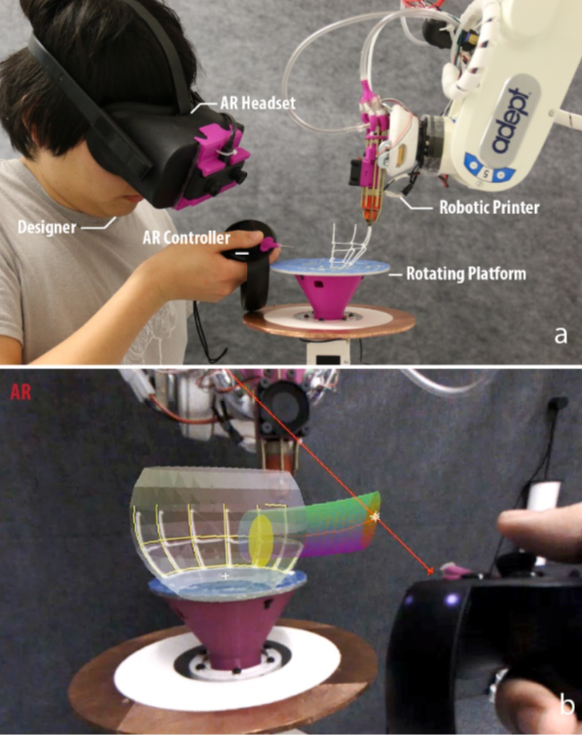 Figure 1: a) RoMA overview. b). Designer view from the AR headset. The designer creates a digital spout while the robot prints the teapot body. Digital model is overlaid onto the physical model. Introduction Interactive fabrication [43] entails a hands-on approach during the 3D modeling process to offer a reflective design experience. This concept has been developed with several approaches [4]. For example, Constructables [24] proposes a step-by-step laser cutting system to design 3D assemblies from 2D physical cutouts. D-Coil [28] allows the user to create a 3D digital model by directly handcrafting its physical counterpart. On-the-Fly Print [27] combines CAD digital modeling with incremental low-fidelity physical rendering, while ReForm [41] combines hand modeling with digital carving of clay to create a 3D model. Each system has a different set of trade-offs. For example, the D-Coil process mirrors the hands-on approach of clay-coiling, but forces the designer to support the entire construction process. On-the- Fly Print produces low-fidelity models incrementally, but relies on an on-screen modeling process. Even with a model in-hand, it is not always easy to transfer design insight from the real-world back to a CAD model on the computer. In this paper, we present the design and implementation of the Robotic Modeling Assistant (RoMA) (Figure 1), an interactive fabrication system designed to further the integration of hands-on design with fast incremental printing. A key feature of this integration is that design and fabrication occur simultaneously in a single working volume. To use the RoMA system, a designer wears an Augmented Reality (AR) headset and starts designing inside the print volume using a pair of AR controllers. As soon as a design feature is completed, the RoMA robotic arm prints the new feature on-site, starting in the back half of the design volume. At any time, the designer can bring printed features into the front half of the design volume for use as a physical reference. As she does so, the robot updates its schedule and prints another available part of the model. Once she finishes a design, the designer steps back, allowing the robotic system to take full control of the build platform to finish printing. Our proxemics-inspired human/robot handshake design [3, 40] lets the designer focus on design while the robot simultaneously performs construction in the background. We illustrate the potential benefits of RoMA’s configuration by demonstrating how it can be used in several design scenarios. In our teapot example, we demonstrate how the designer can use just-printed parts as reference for the next design step. The designer can rest her hand on a partially printed teapot body and adjust the handle geometry so that it fits snuggly around her real finger. In our firehouse example, we illustrate how the designer can place a figurine atop the already printed first floor of a building to ensure proper proportion for the second level. Finally, we demonstrate that RoMA is precise enough to allow the direct design and fabrication on an existing object. This opens up new design opportunities for on-object design and printing. We conclude by reporting on the technical challenges we face and presenting how the current limitations of our system could be addressed in the future. RoMA Design The main design goal of RoMA is to provide the designer with a hands-on modeling experience where design and building are closely interweaved. A natural consequence of this objective is that the designer and the printing system must work in close proximity. This leads us to consider open-space 3D printing configurations such as robotic arm systems. While several robotic arm printing systems [5, 18, 25] have been proposed previously, they treated the printing process as a separate step of a design cycle. To let the designer focus on her design rather than manually controlling the robotic arm fabricator, we employ a proxemics-inspired handshake mechanism [3, 40]. As is shown in Figure 2, the designer and the robotic arm are situated on opposite sides of the rotating platform, where the 3D model is both designed and fabricated. To design a 3D primitive, the designer remains near the building platform in Designer Zone 2. The printing system keeps the platform immobile and prints the part of the model currently in the back half of the platform (Figure 3b). At any time, the designer can enter Designer Zone 1 by touching the handle of the platform, and rotating it to bring part of the model forward. After finishing the print of the current edge, the robotic arm parks away from the user and releases the platform brake (Figure 3c). Once the designer is satisfied with the new position of the platform, she releases it and begins to design a new feature using our AR CAD software. If the designer steps away from the printing platform and into Designer Zone 3, the robotic fabricator assumes full control of the platform and finishes the printing job (Figure 3d). 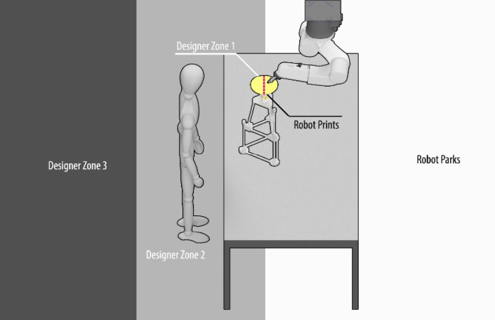 Figure 2. Our setting illustrating the interactions between the designer and the robotic arm based on proxemics. The strict division of the printing platform is due to our safety concern over interacting with the robotic arm. In our current implementation, the robotic arm is programmed to print only on the back half of the modeling platform and this policy is enforced at the lowest level of the robot arm controller firmware by establishing Workcell Obstacles [1]. The user will also be warned with vibration on the controller, if she accidentally enters into the robot printing area. 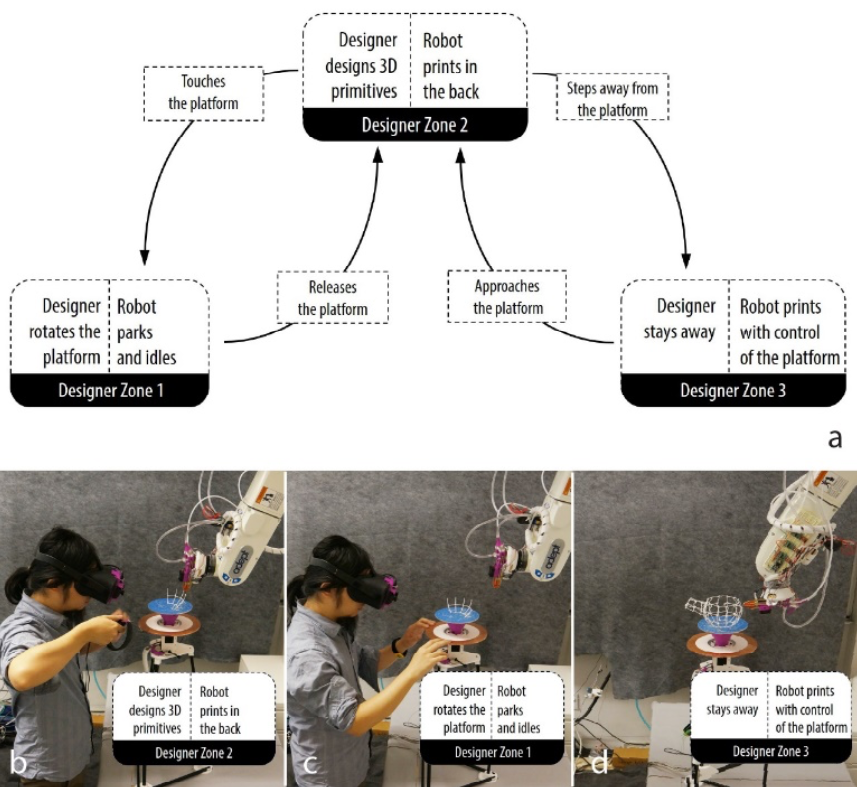 Figure 3. a). Proxemics interaction state machine diagram. Based on different designer zones, the designer can switch among activities such as digital modeling, rotating platform, and complete design; the robot will switch between printing and idle correspondingly. b, c, d). Interaction based on different proximity. The design of a digital primitive is achieved with our custom AR modeling tool. It includes traditional CAD primitives such as revolve, extrude, loft and sweep but emphasizes interactive design in a manner similar to SketchUp [36]. Because our system is designed with deep integration of Rhino CAD modeling software [31], the designer may also switch to and from the Rhino editor for tasks that are more easily accomplished on-screen. Using RoMA To illustrate a typical interaction using RoMA, we consider the case of designing a teapot model from scratch. The designer starts the design process by donning the AR Headset. She then picks up the primary controller and walks to the design stage (Designer Zone 2). She calls up a marking menu [12] to select from among the different primitives available to our system. Planning to design the teapot’s main body, she selects the revolve tool and draws the side profile of the teapot on the XZ-plane using the controller. As she draws, the system displays the corresponding surface of revolution. The designer places her hand on the platform and adjusts the side-profile curve so that the teapot is slightly taller than her hand (Figure 4a). When she is satisfied with her design, she validates it by pressing the confirm button on the controller. The robotic arm starts to print in the back of the platform using the WirePrint technique [23]. 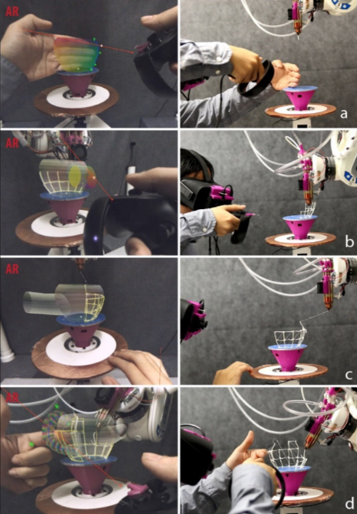 Figure 4. Creating a teapot with RoMA. a). User designs the teapot body. b). User creates the spout while the robotic arm prints the teapot body. c). Robotic arm retreats and digital geometry rotates as user turns platform. d). User designs the handle against the partially printed teapot body. While the robotic arm begins to print the body of the teapot, the designer adds a spout to her design using the sweep tool. She selects a circular cross-section and adjusts the diameter of the root of the spout by using the controller’s joystick. She then draws a sweep rail from inside the teapot body (Figure 4b left) before adjusting the diameter of the terminal end of spout. After tuning her design, the designer validates it and proceeds to work on the handle. To access the location of the teapot handle, the designer grabs the platform’s ring handle (Designer Zone 1). After the short time it takes for the robot arm to finish printing the current edge and park, the platform brake is released. The designer is free to rotate the orientation of the model as she sees fit (Figure 4c). The printer has made significant progress printing the part of the body where the handle will go, so she can use this printed surface as a reference for her design. She places her hand onto the surface and creates a sweep fitting snugly around her finger (Figure 4d). After adjusting her design, the designer steps away from the platform (Designer Zone 3), indicating to the printer that it may now rotate the platform as needed to complete the print. Figure 5 shows the printed teapot example. Because real-world constraints were easily integrated into the design process, the design is well proportioned. The total time elapsed between the start of the design and the completion of printing is 16 minutes in the current system setup. The teapot example showcases some of the key features of RoMA. First, the user always leads the design, and the robotic arm works as an "assistant", instantiating the current design as needed, and changing its printing plan accordingly. The system can be interrupted at a vertex boundary (rather than a feature boundary as in On-the-Fly Print [27] or ReForm [41]) to provide a more seamless experience. Second, because the design and printing happen simultaneously and in close proximity, the designer can easily include real world constraints in her design. 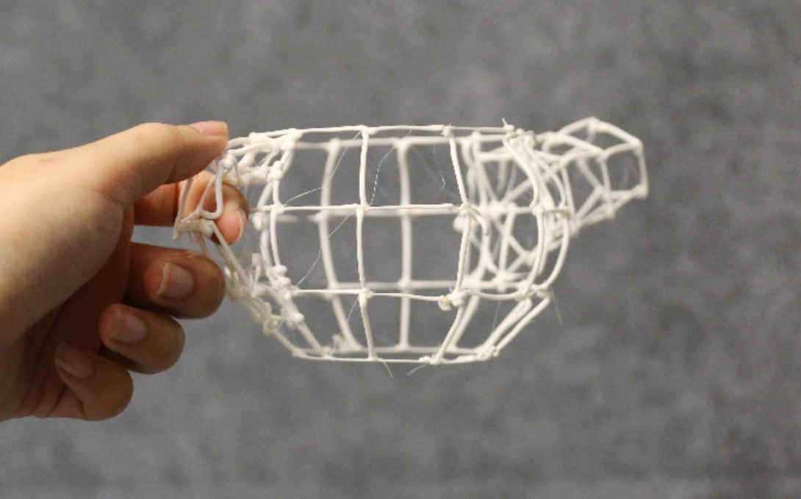 Figure 5. Printed teapot. The printing stands resulting from arm retraction are removed by hand. Using Newly Printed Parts to Scaffold Further Design One of the unique benefits of RoMA is that it makes it possible for the designer to use previously printed primitives to support the next design steps. We illustrate this further by showing how a user could design a multi-level toy firehouse. As shown in Figure 6, our goal is to design a firehouse which can fit both a Lego vehicle in the first-floor garage, and a Lego figurine on the second floor. The designer starts this project by placing the Lego vehicle onto the rotating platform and drawing a 2D rectangle directly around it. After explicitly marking the rectangle, she fine-tunes its dimensions using the AR controller’s joystick. As with the control points on freehand curves, this precise control offsets the difficulty of designing with precision in 3D space. The designer uses the Extrusion tool to create the first level, adjusting the height of the first story to end slightly above the top of the vehicle. The resulting shape is automatically sent for printing (Figure 6a and b). To design the second level, the designer places the Lego figurine on top of the printed first story. She then creates a new rectangular base for the second story. The system automatically snaps that rectangular base to the existing geometry, producing a footprint identical to that of the first floor. The designer can now extrude the volume upward, making sure it leaves plenty of room above the head of the Lego figurine. She adjusts the size of the roof rectangle to taper the second story so that it is well-proportioned to the Lego figurine. She then steps away to let the printer finish the print. While printing, the robotic arm carefully avoids the volume interior to the print, protecting the vehicle and figurine, as well as the print itself (Figure 6c). This scenario would be very difficult in an AR-only system such as MixFab [42], because there would be no physical first layer in that scene. Such interaction, however, is simple in RoMA, because the first layer is quickly instantiated by the robotic fabricator. 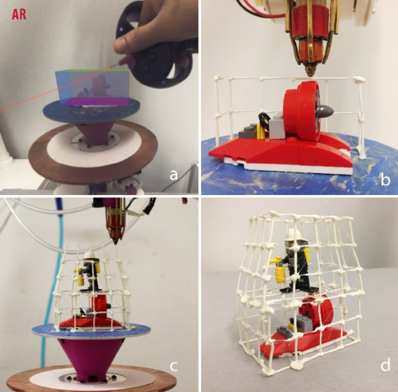 Figure 6. Creating a Lego firehouse. a) User designs the first layer of the firehouse around the vehicle. b). Robot prints around the vehicle. c). User designs the second story around the Lego figurine resting on first layer. d). Final result. Design and Printing on Existing Objects In this example, we illustrate how the design of our system makes it straightforward to design additions directly onto an existing object. In this case, our designer would like to create a cape to fit a lion-shaped toy (Figure 7). After affixing the model to the platform using double-sided tape, she selects the Patch function to capture the surface to which the cape will be attached (Figure 7a). To do so, the designer doodles on the target surface, creating an implicit scan of it. A corresponding spline patch is rendered on the AR display to confirm a good match. (Figure 7b). The designer proceeds to design the cape by drawing one curve on the patching surface (the lion’s back) and another curve in free 3D space behind the first. After selecting the loft command, the designer adjusts the two curves to achieve the desired effect. She rotates the lion’s back towards the robot, which prints the full cape in minutes. Thanks to our calibration process, the robotic arm can directly print onto the model, as shown in Figure 7d. 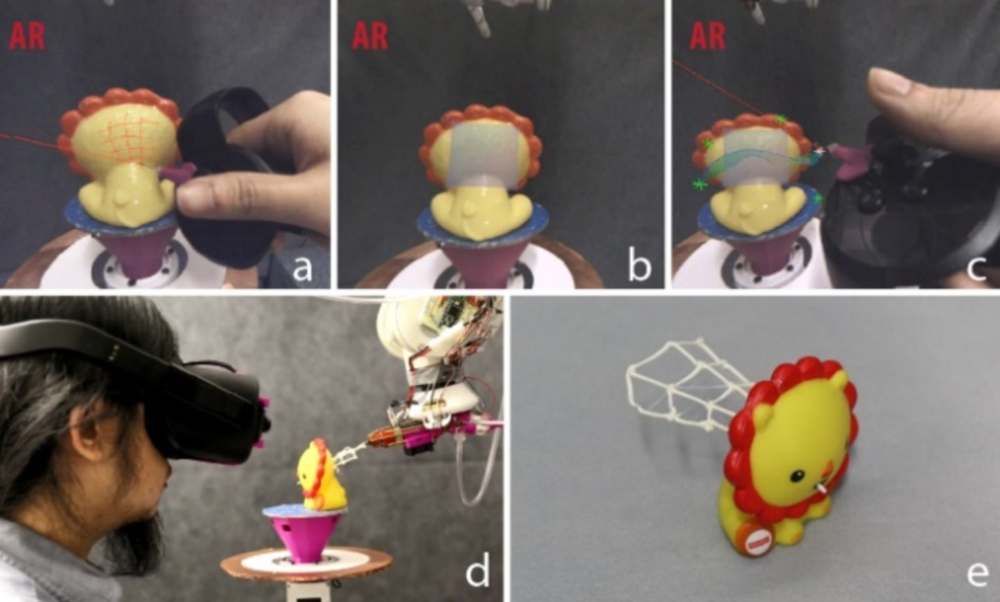 Figure 7. Adding a cape to a toy figure. a). User doodles to create a spline patch with the AR controller. b). Patch rendered in AR. c). User creates the cape in AR. d). Robot prints directly on the lion model. e). Printed result. Unlike previous systems such as Encore [6], RoMA does not require a 3D digital scan of the existing object in advance. Moreover, the design process happens directly on and around the real physical object. While some materials do not adhere well to the filament, this can be circumvented by applying spray adhesive to the object before designing an addition to it. In Figure 8, we give another example in which we designed a stand in-situ to support the complex geometry of an F18 fighter jet model. 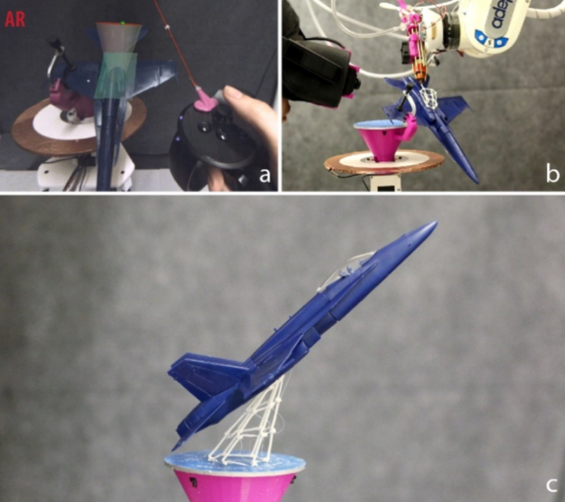 Figure 8. Fighter jet stand. Physical Modification Even with the ability to modify geometry before printing, users will inevitably discover that a printed feature does not fit their goals. We considered several ways for designers to remove undesirable printed geometry. One would be to use an approach like that of On-the-Fly Print by adding a cutting tool to the robotic arm. This approach would have the advantage of high precision, but would cause the interaction to lag, since the designer would need to specify a cut in the Designer Zone, rotate that site into the Robot Zone for cutting, and then rotate it back to design a replacement feature. This would create a large delay between intent and action, a violation of our design goals. Instead we equipped one of our controllers with a simple clipper. As shown in Figure 9a, we installed the clipper such that any cut it makes also actuates the main trigger of the AR controller. To excise a feature, the designer simply clips the feature away. The system detects each cut and removes the feature from the digital model as soon as all supporting edges have been severed (Figure 9b). 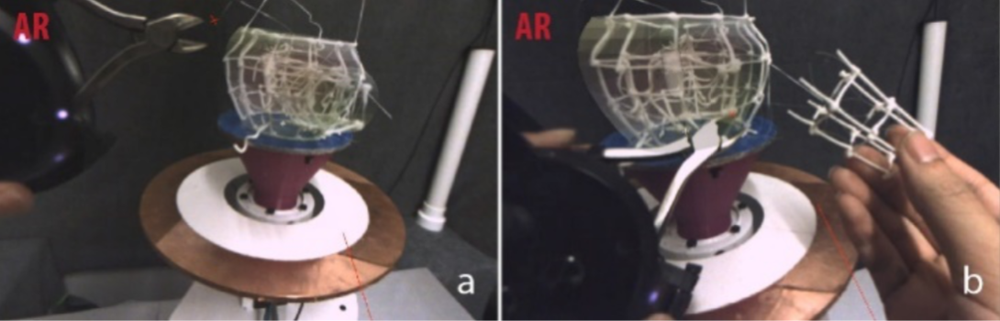 Figure 9. AR cutting tool. User removes the spout by cutting all the supporting edges. Implementation We now explain the details of our prototype implementation. Hardware Implementation Our system consists of three main hardware components: an AR headset along with its controllers, a robotic arm augmented with a 3D printing head, and a rotating platform to hold the model. We will discuss them in the following sections. AR Headset and Controllers During the initial phase of our project, it proved difficult to access an augmented reality headset combining both a wide FOV and a useful focal volume. The Microsoft HoloLens, for instance, provides great image quality but cannot render accurately within a meter of the user’s head. To address this problem, we created an AR headset by connecting an OVRVision [26] stereoscopic camera to an Oculus Rift VR headset (Figure 10a). This configuration grants us a wide FOV (horizontal angle 115°, vertical angle 105°) with little distortion for interactions within an arm’s length. Because both the OVR camera view and the user-created digital geometry are projected onto the same viewing plane, there is little eye strain. We decided to not compute real-world occlusion for ease of implementation. Instead, we render virtual geometry with low opacity, which allows users to rely on other depth cues while working in AR. We modified the Oculus Touch controllers to serve as the input tools for RoMA (Figure 10 b and c). The right-hand controller is used for most interaction inputs. We installed a needle tip extension at the front of the controller to simplify pointing actions and to serve as the contact point for the patch operation. The left-hand controller is augmented with a physical wire clipper to serve as a cutting tool. 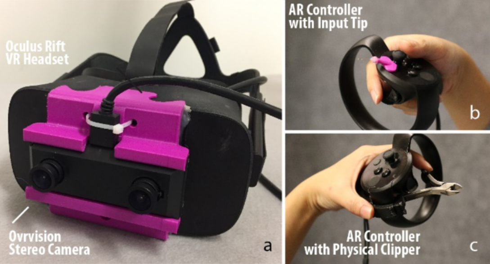 Figure 10. AR setting. a). AR Headset with see-through dual camera. b). Controller with calibrated input tip. c). Controller with calibrated clipper. Both the headset and the controllers are monitored by three Oculus Rift trackers arranged so that the robotic arm never occludes all three from a tracked volume. In addition to rendering, the headset position serves as a source of proxemic data from which the robotic arm can sense and respond to user intention. Robotic Arm 3D Printer We use a ceiling-mounted Adept S850 6DOF robotic arm as the motion platform for our robotic fabricator. This configuration offers the flexibility we need to print a complex mesh without requiring the model to move during printing as in previous systems [9, 38]. Safety is an important consideration during system design. The Adept S850 is not an intrinsically human-friendly robot, so we added several safeguards to our design. First, we use Workcell Obstacles [1] definition in the robot controller firmware to guarantee that no part of the robot can enter the user’s space (Designer Zones 1-3 in Figure 3). The robot’s movement speed is also limited to 20mm per second for vertical extrusion and 80mm per second for lateral movement. This constraint does not significantly reduce printing speed since the bottleneck is currently the extrusion speed of the filament wire. Second, to streamline egress, we design the work area as a standing station. Finally, we experimented with installing three force sensors between the extruder tip and the robot’s end effector (Figure 11b). When the sensors detect a force stronger than expected during printing, as would occur upon collision with the printing platform, the robotic arm immediately halts its current motion, retreats, and parks far from the accident site. We decided on a dynamic retraction rather than an emergency brake out of concern for a scenario in which the robot could pin a user’s hand between the platform and the printhead. We discuss later in this text how the use of a standard robot limited our design space. The final part of the robotic printer is the printhead shown in Figure 11a. It was built by extending the reach of a standard E3D hot-end and increasing the extrusion diameter to 1mm to create a stronger structure. Similar to the WirePrint system, eight air-cooling nozzles surround the extruder tip, solidifying the filament immediately upon extrusion. The use of coolant mist, as in On-the-Fly Print, was deemed too distracting for the user in our configuration. 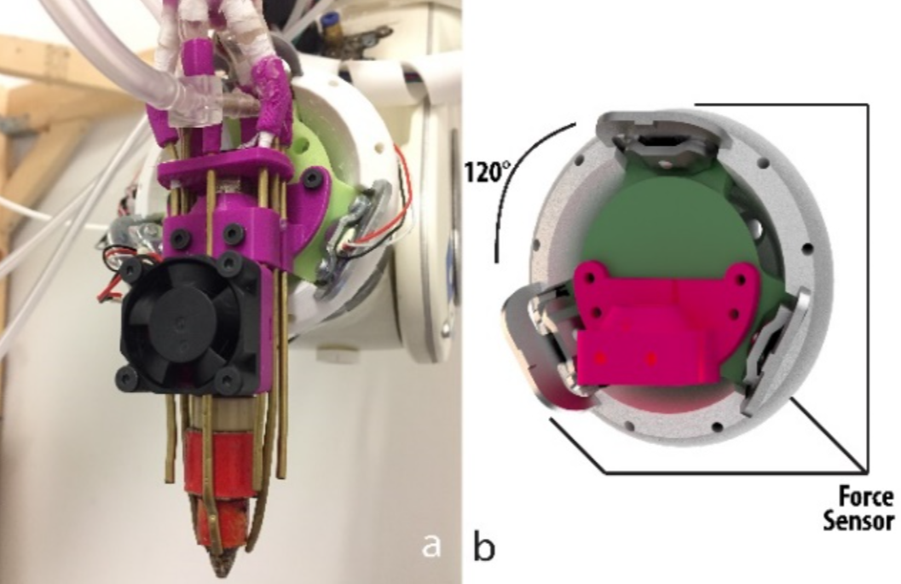 Figure 11. Printhead design. a) Printhead overview. b). 3-way force sensor (digital rendering). Rotary Design Platform Designer and robotic arm share access to a rotary platform on which modeling and printing occur. The user can rotate the platform either to send digital geometry into robot space for printing, or to bring printed geometry into user space to serve as a design reference. Our platform uses an encoder to track absolute rotation and a stepper motor as both a brake and an actuation mechanism. The handle of the platform is covered with copper foil to create a touch-sensitive area that informs our proxemic handshake system about the user’s intent. Software We present the software architecture of our system in Figure 12. It includes three sub-modules: the AR sub-module, which captures user input and renders the AR scene, the Rhino CAD plugin, which coordinates the various parts of our system with data from both the AR and printing assemblies, and finally the printer sub-module for fabrication. 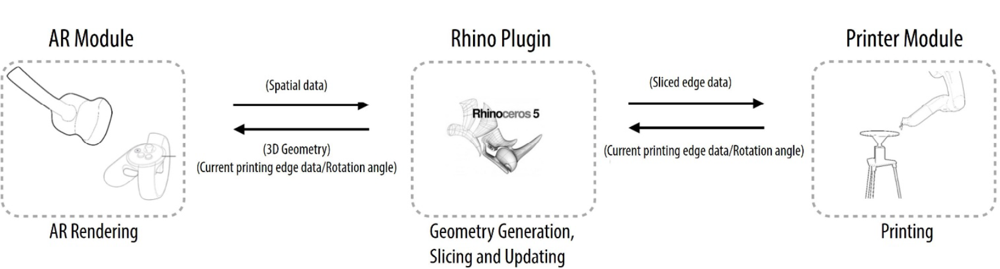 Figure 12. RoMA software pipeline. The AR Module Our custom-built AR renderer uses OpenGL and OpenVR to render the AR scene at between 45 and 60 frames per second, a rate constrained by the OVR Vision AR camera. Rendering occurs in two passes, one to render the real-world camera view, and one to overlay digital geometry constructed by the user. While UI elements are rendered opaquely for clarity, digital geometry is displayed with a high transmittance so that the user can maintain a sense of presence in the real environment. Our AR editor supports 3D modeling with four fundamental operations, Extrude, Revolve, Loft and Sweep. User input is collected mostly by ray-tracing from the controller in the direction of its needle tip. A virtual laser line from the controller is projected forward, snapping to any virtual geometry it intersects. The benefit of a ray-traced input over direct, position-based input is an increase in precision and a decreased risk of accidental collision between the controller and objects in the design space. Command selection is performed by a multi-level marking menu [12] triggered and controlled by the controller joystick. We show a typical sequence of interactions to create a cylindrical extrusion in Figure 13. Figure 13. The sequence of interactions to create a cylindrical extrusion. a). User selects extrude from the marking menu. b). User selects circle. c). User selects “draw on plane.” d) User draws a circle on the XZ-plane by specifying 2 points. e). User select curve. f). User selects “draw in 3D space.” f.). Extrusion. g). User tapers terminal end using the joystick.
Rhino Module
The Rhino module acts as the computational center for the RoMA system. For geometry creation, user input is sent from the AR controller to the Rhino module. The Rhino module then generates the appropriate 3D geometry and sends it back to the AR display for rendering. This feedback loop is fast enough render dynamically as geometry is defined.
Slicing and Scheduling of Printing
As soon as the designer confirms a digital model, the Rhino module slices it and schedules it for printing. Like in On-the- Fly print, the digital model is sliced based on its UV map, and printing occurs in FIFO order. Unlike On-the-Fly print, sliced edges are sent to the printing queue only if they are located in Robot Zone 1. Rotating the platform triggers a re- calculation of all the unprinted edges and an immediate rescheduling of the printing order. The recalculation of the edges happens within seconds, so no perceptible delay occurs for designer. As the designer steps back into Designer Zone 3, the robot assumes direct control of the rotating platform. It finishes printing any unprinted edges in Robot Zone 1, rotates the platform, and updates the printing queue with any geometry that becomes available during the rotation of the platform. This process repeats until all printable edges are finished.
Since the designer creates digital models incrementally, collision may occur during the fabrication process. To prevent this, RoMA checks for potential collisions by digitally simulating the robot tip at the location of the next edge in the printing queue. If a collision is unavoidable with the original build plan, the robot relaxes its requirement for a particular printing orientation [38]. Unprintable edges are ignored in the current system. This is not a complete solution for a collision solver, but it has proven effective for our current working prototype.
Printer Module
The communication between the Rhino plugin and the robotic arm happens through a serial port. We implemented a custom machine code interpreter (Similar to G-code) on the robot controller that decodes the printing edge data received from the Rhino plugin. The robotic arm’s motion is planned and executed based on the decoded location, orientation, speed, extrusion and cooling information. Upon finishing an edge, the printer module, running inside the robot controller, signals the Rhino plugin to request the next edge.
Calibration
Our system relies heavily on the proper spatial calibration and alignment of the frames of reference of each sub-module. For convenience, we choose the default Oculus Rift spatial frame as the reference coordinate system from which transformations to and from the robotic arm, and the CAD system can be easily executed. We bootstrap the calibration of all elements as follows. First, we calibrate the position of the pointing tip of the controller with respect to the controller’s AR pose by placing the tip at a fixed position and recording about 20 6-DoF measurements of the controller in different orientations. We use these measurements to infer the position of the tip using a least squares regression. We then use this controller to compute the transformation between the robot arm and the Oculus coordinate system. We do so by moving the robot’s end effector to eight different positions in the working volume and touching the controller’s needle tip to the robot’s end effector. We use least squares again to calculate the robot’s position and orientation in the Oculus reference frame. We then define Platform Space by recording three points on the platform with the robot’s end effector. We then choose an arbitrary rotation between platform space and CAD space. The starting rotation is immaterial, since we can always rotate the platform about its vertical axis.
Finally, to calibrate the camera. We outfit a cube with a calibration pattern, which gives a projection matrix for each of the stereo cameras. We then measure the eight corners of the cube with the controller’s needle tip. This gives us enough data to solve for the Camera to AR Head transformation for each eye. Figure 4 b and c demonstrates the high precision of our calibration, as the rendered yellow edge previews line up almost exactly with the physical white filament.
Discussion and Future Work
The RoMA system outlined above illustrates the feasibility of blending design and fabrication by having a designer and a robotic 3D printer work side-by-side. We now review some limitations of our current implementation.
Balancing Expressiveness and Safety
The current RoMA implementation is constrained by the use of an industrial grade robotic arm. To ensure the safety of the designer, we intentionally limited the robotic arm’s movement speed, restricted the movement of the robotic arm to the back of the rotation platform, and chose a standing design setup to streamline egress. Using a human-friendly robot such as Sawyer [30] or Kinova [17] would allow us to relax many of these constraints. With a human-friendly robotic arm, the system could simply move out of a designer’s way as she moves around the model. Additionally, it would be possible to design a sitting work station, allowing the designer to work for a longer period of time and simplifying the transition between our hands-on approach and more traditional modeling using a mouse and a keyboard.
A human-friendly robot could also permit a user to manipulate its end-effector by hand. This might open up new interaction opportunities between the designer and the robotic arm. For example, the designer may be able to create freeform and organic structures similar to the hands-on crafting technique presented in D-Coil.
The RoMA system presented above was intended as a platform to evaluate the potential of our approach, not as an evaluation ready system. As we ultimately intend to evaluate the efficacy of how RoMA is supporting more reflective design, we are in the process of securing access to a human friendly robotic arm.
RoMA as Part of Full Design Pipeline
As indicated by Schön [35], a reflective conversation between the designer and the design object could potentially lead to a faster convergence to a satisfactory result. RoMA is our attempt to support such early design exploration in 3D digital modeling. With fast physical instantiation, the designer can access an already printed 3D primitive at each of the design steps, and can use it, or modify it, for further design support.
In the current implementation, such physical instantiation strictly follows the designer’s creation. However, it is also possible to extend RoMA as a more intelligent system, which can analyze user’s design primitives on-the-go, and suggest alternative structures [15] or optimize the printed shape with the robotic arm printer.
As the key aspects of the design are established, the designer will likely return to her workstation to finalize the design for fabrication. This is, in general, a data-entry-intensive phase better suited to desktop work. To simplify this transition, we designed our system as a plug-in to Rhino, making it simple to move between the two-design approaches at will. In fact, our system could be used as a stand-alone printer like the On- The-Fly Print system if necessary. Ultimately, the designer will use standard printing technologies to create more polished prototype of her design.
Dealing with Large Objects
We have demonstrated how the system could use existing objects as reference during design. Our examples involved relatively small objects which fit on the rotating platform. It is also possible to report real-world measurements of a large object, like a bike, that could be brought into the Oculus tracking volume. For example, a designer may wish to create a new plug to be inserted into the end of a bicycle handle bar. One could capture the internal diameter of the handle bar with the AR controller and extrude a cylinder of exactly the right dimensions to fit the hole. For a more precise measurement, it would be easy to integrate a digital measuring tool which could directly populate the model’s parameters. Neither approach would make it possible to easily print directly on top of the large object in our system. As explained before, using a human friendly robot would allow us to relax the restrictions on robot interaction. This would make printing on a large object possible.
Printing Quality
The high precision of the robotic arm ensures the success of printing wire frame structures (e.g. Figure 5 and Figure 8). However, because RoMA allows the designer to rotate the printing platform at will, the robotic arm may need to finish half-printed objects from a new position. In doing so, the robot arm must retract from the current position and relocate. This motion can create fine, extraneous strands of filament attached to the model due to the material properties of ABS (Figure 14a). These thin strands may be unattractive, but they do not diminish the functionality of the printed model as a low-fi physical reference to support the early design process. Regardless, these thin strands of material are easily removed with a pair of clippers (Figure 14b).
Conclusion
We presented RoMA, an interactive fabrication system with an on-site and hands-on modeling experience. As a designer creates a new design using the AR CAD editor, features are constructed by a robotic arm on the shared printing platform. The designer can rotate the platform, and use the partially printed physical model as a tangible reference for further design. RoMA enables the designer to integrate real-world constraints into a design rapidly and intuitively and allows the designer to directly design and print on and around a physical object.
Figure 13. The sequence of interactions to create a cylindrical extrusion. a). User selects extrude from the marking menu. b). User selects circle. c). User selects “draw on plane.” d) User draws a circle on the XZ-plane by specifying 2 points. e). User select curve. f). User selects “draw in 3D space.” f.). Extrusion. g). User tapers terminal end using the joystick.
Rhino Module
The Rhino module acts as the computational center for the RoMA system. For geometry creation, user input is sent from the AR controller to the Rhino module. The Rhino module then generates the appropriate 3D geometry and sends it back to the AR display for rendering. This feedback loop is fast enough render dynamically as geometry is defined.
Slicing and Scheduling of Printing
As soon as the designer confirms a digital model, the Rhino module slices it and schedules it for printing. Like in On-the- Fly print, the digital model is sliced based on its UV map, and printing occurs in FIFO order. Unlike On-the-Fly print, sliced edges are sent to the printing queue only if they are located in Robot Zone 1. Rotating the platform triggers a re- calculation of all the unprinted edges and an immediate rescheduling of the printing order. The recalculation of the edges happens within seconds, so no perceptible delay occurs for designer. As the designer steps back into Designer Zone 3, the robot assumes direct control of the rotating platform. It finishes printing any unprinted edges in Robot Zone 1, rotates the platform, and updates the printing queue with any geometry that becomes available during the rotation of the platform. This process repeats until all printable edges are finished.
Since the designer creates digital models incrementally, collision may occur during the fabrication process. To prevent this, RoMA checks for potential collisions by digitally simulating the robot tip at the location of the next edge in the printing queue. If a collision is unavoidable with the original build plan, the robot relaxes its requirement for a particular printing orientation [38]. Unprintable edges are ignored in the current system. This is not a complete solution for a collision solver, but it has proven effective for our current working prototype.
Printer Module
The communication between the Rhino plugin and the robotic arm happens through a serial port. We implemented a custom machine code interpreter (Similar to G-code) on the robot controller that decodes the printing edge data received from the Rhino plugin. The robotic arm’s motion is planned and executed based on the decoded location, orientation, speed, extrusion and cooling information. Upon finishing an edge, the printer module, running inside the robot controller, signals the Rhino plugin to request the next edge.
Calibration
Our system relies heavily on the proper spatial calibration and alignment of the frames of reference of each sub-module. For convenience, we choose the default Oculus Rift spatial frame as the reference coordinate system from which transformations to and from the robotic arm, and the CAD system can be easily executed. We bootstrap the calibration of all elements as follows. First, we calibrate the position of the pointing tip of the controller with respect to the controller’s AR pose by placing the tip at a fixed position and recording about 20 6-DoF measurements of the controller in different orientations. We use these measurements to infer the position of the tip using a least squares regression. We then use this controller to compute the transformation between the robot arm and the Oculus coordinate system. We do so by moving the robot’s end effector to eight different positions in the working volume and touching the controller’s needle tip to the robot’s end effector. We use least squares again to calculate the robot’s position and orientation in the Oculus reference frame. We then define Platform Space by recording three points on the platform with the robot’s end effector. We then choose an arbitrary rotation between platform space and CAD space. The starting rotation is immaterial, since we can always rotate the platform about its vertical axis.
Finally, to calibrate the camera. We outfit a cube with a calibration pattern, which gives a projection matrix for each of the stereo cameras. We then measure the eight corners of the cube with the controller’s needle tip. This gives us enough data to solve for the Camera to AR Head transformation for each eye. Figure 4 b and c demonstrates the high precision of our calibration, as the rendered yellow edge previews line up almost exactly with the physical white filament.
Discussion and Future Work
The RoMA system outlined above illustrates the feasibility of blending design and fabrication by having a designer and a robotic 3D printer work side-by-side. We now review some limitations of our current implementation.
Balancing Expressiveness and Safety
The current RoMA implementation is constrained by the use of an industrial grade robotic arm. To ensure the safety of the designer, we intentionally limited the robotic arm’s movement speed, restricted the movement of the robotic arm to the back of the rotation platform, and chose a standing design setup to streamline egress. Using a human-friendly robot such as Sawyer [30] or Kinova [17] would allow us to relax many of these constraints. With a human-friendly robotic arm, the system could simply move out of a designer’s way as she moves around the model. Additionally, it would be possible to design a sitting work station, allowing the designer to work for a longer period of time and simplifying the transition between our hands-on approach and more traditional modeling using a mouse and a keyboard.
A human-friendly robot could also permit a user to manipulate its end-effector by hand. This might open up new interaction opportunities between the designer and the robotic arm. For example, the designer may be able to create freeform and organic structures similar to the hands-on crafting technique presented in D-Coil.
The RoMA system presented above was intended as a platform to evaluate the potential of our approach, not as an evaluation ready system. As we ultimately intend to evaluate the efficacy of how RoMA is supporting more reflective design, we are in the process of securing access to a human friendly robotic arm.
RoMA as Part of Full Design Pipeline
As indicated by Schön [35], a reflective conversation between the designer and the design object could potentially lead to a faster convergence to a satisfactory result. RoMA is our attempt to support such early design exploration in 3D digital modeling. With fast physical instantiation, the designer can access an already printed 3D primitive at each of the design steps, and can use it, or modify it, for further design support.
In the current implementation, such physical instantiation strictly follows the designer’s creation. However, it is also possible to extend RoMA as a more intelligent system, which can analyze user’s design primitives on-the-go, and suggest alternative structures [15] or optimize the printed shape with the robotic arm printer.
As the key aspects of the design are established, the designer will likely return to her workstation to finalize the design for fabrication. This is, in general, a data-entry-intensive phase better suited to desktop work. To simplify this transition, we designed our system as a plug-in to Rhino, making it simple to move between the two-design approaches at will. In fact, our system could be used as a stand-alone printer like the On- The-Fly Print system if necessary. Ultimately, the designer will use standard printing technologies to create more polished prototype of her design.
Dealing with Large Objects
We have demonstrated how the system could use existing objects as reference during design. Our examples involved relatively small objects which fit on the rotating platform. It is also possible to report real-world measurements of a large object, like a bike, that could be brought into the Oculus tracking volume. For example, a designer may wish to create a new plug to be inserted into the end of a bicycle handle bar. One could capture the internal diameter of the handle bar with the AR controller and extrude a cylinder of exactly the right dimensions to fit the hole. For a more precise measurement, it would be easy to integrate a digital measuring tool which could directly populate the model’s parameters. Neither approach would make it possible to easily print directly on top of the large object in our system. As explained before, using a human friendly robot would allow us to relax the restrictions on robot interaction. This would make printing on a large object possible.
Printing Quality
The high precision of the robotic arm ensures the success of printing wire frame structures (e.g. Figure 5 and Figure 8). However, because RoMA allows the designer to rotate the printing platform at will, the robotic arm may need to finish half-printed objects from a new position. In doing so, the robot arm must retract from the current position and relocate. This motion can create fine, extraneous strands of filament attached to the model due to the material properties of ABS (Figure 14a). These thin strands may be unattractive, but they do not diminish the functionality of the printed model as a low-fi physical reference to support the early design process. Regardless, these thin strands of material are easily removed with a pair of clippers (Figure 14b).
Conclusion
We presented RoMA, an interactive fabrication system with an on-site and hands-on modeling experience. As a designer creates a new design using the AR CAD editor, features are constructed by a robotic arm on the shared printing platform. The designer can rotate the platform, and use the partially printed physical model as a tangible reference for further design. RoMA enables the designer to integrate real-world constraints into a design rapidly and intuitively and allows the designer to directly design and print on and around a physical object.